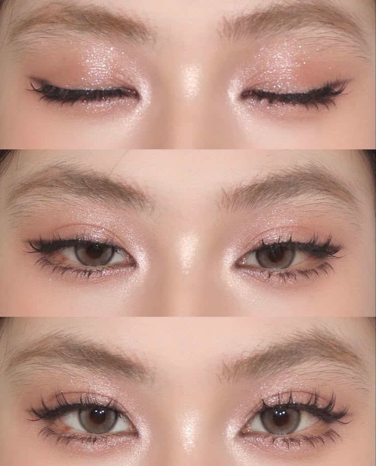
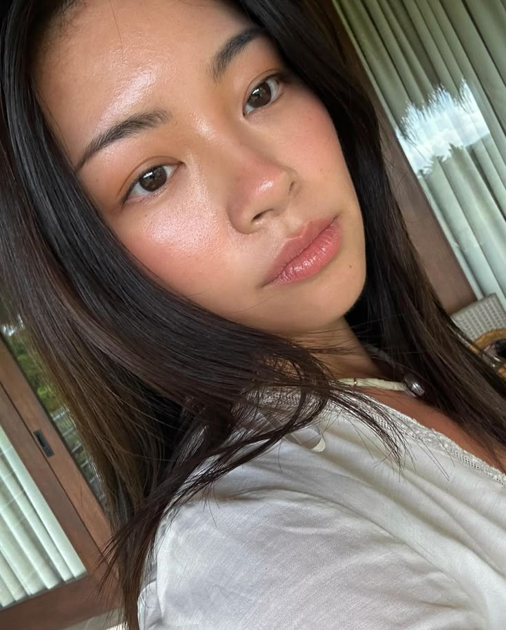
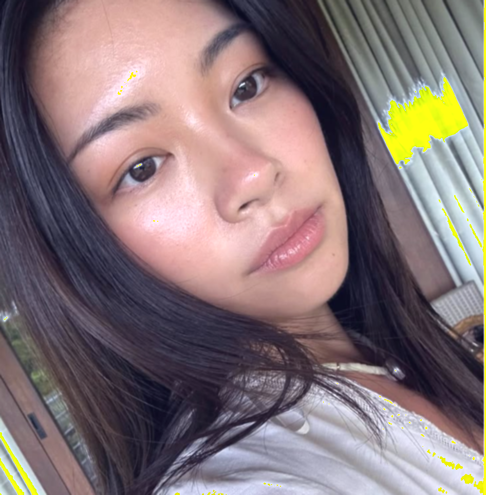
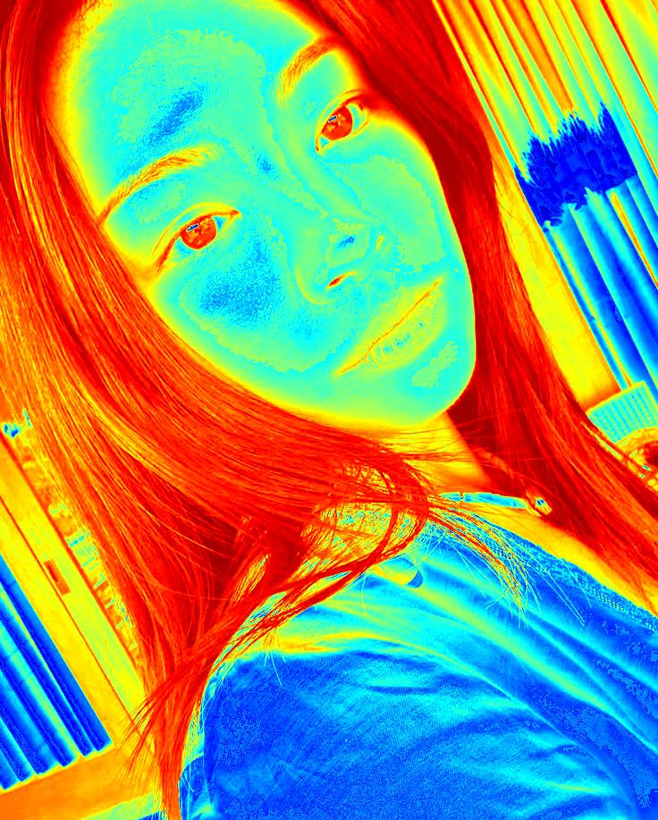

Can Generative AI find me the best makeup mentor?

Recently, I’ve been getting more interest in makeup because my friends all around me wear it. Whether to hide a pimple, dark underseyes, or just put more glitter on their faces, I want to also understand how to use certain products to acheive a specific look. But I need help. Youtube videos are too long, blog posts don’t give enough visuals, and I just don’t know anyone on the internet who looks similar to me. I don’t know what my foundation type is, I don’t know what blush color looks the best, and I don’t want to be spending well over $100 just to acheive a natural makeup look.
I’m interested to see whether I can create 5 different SVGs of makeup artists and have them give tips for certain pictures of models. Maybe then, I can generate tips for how I should go about wearing makeup.
Show Code
import svgwrite
def create_makeup_artist_svg(filename, face_color, hair_color, lips_color, eyeshadow_color): dwg = svgwrite.Drawing(filename, profile=‘tiny’, size=(“200px”, “200px”))
# Face
dwg.add(dwg.circle(center=(100, 100), r=50, fill=face_color))
# Hair
dwg.add(dwg.rect(insert=(50, 40), size=(100, 80), fill=hair_color, rx=20, ry=20))
# Eyes
dwg.add(dwg.circle(center=(80, 90), r=5, fill="black"))
dwg.add(dwg.circle(center=(120, 90), r=5, fill="black"))
# Eyeshadow
dwg.add(dwg.ellipse(center=(80, 85), r=(10, 5), fill=eyeshadow_color, opacity=0.6))
dwg.add(dwg.ellipse(center=(120, 85), r=(10, 5), fill=eyeshadow_color, opacity=0.6))
# Lips
dwg.add(dwg.ellipse(center=(100, 120), r=(15, 8), fill=lips_color))
# Save SVG
dwg.save()Creating 5 different makeup artist SVGs
create_makeup_artist_svg(“makeup_artist_1.svg”, “#F5CBA7”, “#4A2D21”, “#E74C3C”, “#9B59B6”)
create_makeup_artist_svg(“makeup_artist_2.svg”, “#FAE5D3”, “#3B3B3B”, “#D35400”, “#2980B9”)
create_makeup_artist_svg(“makeup_artist_3.svg”, “#FAD7A0”, “#1C1C1C”, “#C0392B”, “#16A085”)
create_makeup_artist_svg(“makeup_artist_4.svg”, “#FDEBD0”, “#6E2C00”, “#A93226”, “#8E44AD”)
create_makeup_artist_svg(“makeup_artist_5.svg”, “#E59866”, “#512E5F”, “#E74C3C”, “#2471A3”)
Different SVG Makeup Artists
Information About The Different Services
| Makeup Artist | Specialty | Service Quality | Cost of Service |
|---|---|---|---|
| Sophia Glam | Bridal Makeup | âï¸âï¸âï¸âï¸âï¸ (5/5) | 💲250+ |
| Luna Luxe | Editorial & Fashion | âï¸âï¸âï¸âï¸ (4/5) | 💲200+ |
| Jade Beauty | SFX & Theatrical Makeup | âï¸âï¸âï¸âï¸âï¸ (5/5) | 💲300+ |
| Mia Elegance | Glam & Red Carpet | âï¸âï¸âï¸âï¸ (4/5) | 💲180+ |
| Ella Artistry | Everyday & Natural | âï¸âï¸âï¸âï¸âï¸ (5/5) | 💲120+ |
Test 1
I’m going to prompt ChatGPT:
Ok, now I’m going to start inserting pictures of models and tell me how each of the makeup artists would improve their makeup.
We’re going to insert a picture from Pinterest. My search was “southeast asian woman natural skin†to try and find someone who looks close to me. We’re going to attempt to emulate what would look best on my features. Every makeup artist has a different specialty, but I want to see how different their responses are. Based on the cost of services, I’m assuming the more expensive the service, the better the service will be. Let’s see!

(ok wait I don’t actually look like her but this is the only face I could find with a bare face)
Their comments
| Makeup Artist | Comments |
|---|---|
| Sophia Glam 💠Bridal Makeup Specialist |
Enhancements: - Long-wear foundation for flawless skin. - Soft false lashes for a romantic look. - Champagne shimmer on eyes for bridal glow. - Rosy pink or peach lips. - Hydrating setting spray for longevity. |
| Luna Luxe 📸 Editorial & Fashion Makeup |
Enhancements: - Bold graphic liner or pop of color on eyes. - Glossy, wet-look highlighter. - Slightly overlined lips for a fuller effect. - Cream blush placed higher for lift. - Laminated, feathery brows. |
| Jade Beauty ğŸ SFX & Theatrical Makeup |
Enhancements: - Dramatic eye contouring for stage effect. - Colored contacts or bold eyeshadow. - Gemstones or glitter for a theatrical look. - Deep red or ombré lips. |
| Mia Elegance ✨ Glam & Red Carpet Looks |
Enhancements: - Satin-matte foundation for a luxurious finish. - False lashes with a cat-eye effect. - Bronzed eyeshadow with shimmer. - Defined cheekbones with contour. - Glossy nude or red lips. |
| Ella Artistry 🌿 Everyday & Natural Makeup |
Enhancements: - Lightweight tinted moisturizer for fresh skin. - Clear brow gel for a neat look. - Soft brown eyeliner for subtle definition. - Tinted lip balm or gloss for hydration. - Peach or pink blush for a natural flush. |
Then I wanted to ask ChatGPT if there was any possible way of completing this request:
ok based on their comments, can you manipulate the image based on their makeup recommendations
Here’s what ChatGPT did:
I will now generate five different versions of the image, each reflecting the enhancements recommended by the different makeup artists. This will include adjustments such as:
Sophia Glam: Bridal makeup with enhanced foundation, soft lashes, a glow, and romantic lips. Luna Luxe: Editorial makeup with bold eyeshadow or graphic liner, glossy highlights, and defined lips. Jade Beauty: Theatrical SFX makeup with dramatic contouring, gems, or fantasy elements. Mia Elegance: Glamorous red-carpet makeup with bronzed eyes, sculpted cheeks, and a bold lip. Ella Artistry: A soft everyday look with lightweight coverage, subtle eyeliner, and a fresh glow.I have loaded the image successfully. Now, I will generate five different makeup-enhanced versions based on each makeup artist’s recommendations. Stay tuned! 🎨💄 ​
Show Code
import cv2 import numpy as np from PIL import ImageEnhance # Load image using OpenCV for processing image_cv = cv2.imread(image_path) image_rgb = cv2.cvtColor(image_cv, cv2.COLOR_BGR2RGB) # Function to apply different makeup styles def apply_makeup_style(image, style): img = image.copy() if style == “Sophia Glam”: # Bridal Makeup img = cv2.GaussianBlur(img, (5, 5), 1) # Smooth skin img = cv2.addWeighted(img, 1.1, np.zeros(img.shape, img.dtype), 0, 10) # Slight glow img[:, :, 2] = np.clip(img[:, :, 2] + 20, 0, 255) # Rosy lips elif style == “Luna Luxe”: # Editorial Makeup img[:, :, 0] = np.clip(img[:, :, 0] + 30, 0, 255) # Enhance blue tones for bold eyeshadow img[:, :, 1] = np.clip(img[:, :, 1] + 10, 0, 255) # Add subtle green undertone img = cv2.addWeighted(img, 1.2, np.zeros(img.shape, img.dtype), 0, 15) # Glossy highlight elif style == “Jade Beauty”: # Theatrical SFX img[:, :, 0] = np.clip(img[:, :, 0] + 50, 0, 255) # Intense eye contouring img = cv2.applyColorMap(img, cv2.COLORMAP_JET) # Fantasy-like effect elif style == “Mia Elegance”: # Red Carpet Glam img[:, :, 2] = np.clip(img[:, :, 2] + 40, 0, 255) # Bold lips img = cv2.addWeighted(img, 1.15, np.zeros(img.shape, img.dtype), 0, 10) # Sculpted contour lif style == “Ella Artistry”: # Everyday Natural img = cv2.GaussianBlur(img, (3, 3), 1) # Soft focus img[:, :, 1] = np.clip(img[:, :, 1] + 15, 0, 255) # Subtle glow return Image.fromarray(img)
#Generate makeup variations makeup_styles = [“Sophia Glam”, “Luna Luxe”, “Jade Beauty”, “Mia Elegance”, “Ella Artistry”] makeup_images = {style: apply_makeup_style(image_rgb, style) for style in makeup_styles}
#Save and display the results output_paths = {} for style, img in makeup_images.items(): output_path = f”/mnt/data/{style.replace(’ ‘,’_’).lower()}_makeup.png†img.save(output_path) output_paths[style] = output_path #Display the generated images to the user import ace_tools as tools tools.display_dataframe_to_user(“Makeup Style Transformations”, output_paths)Here are the makeup-enhanced versions of the image based on each makeup artist’s recommendations. You can download and view them below:
| Original Photo | Makeup Done & Enhancements | Comments |
|---|---|---|
 Sophia Glam (Bridal Makeup) 💠|
- Long-wear foundation for flawless skin. - Soft false lashes for a romantic look. - Champagne shimmer on eyes for bridal glow. - Rosy pink or peach lips. - Hydrating setting spray for longevity. |
|
 |
Luna Luxe (Editorial & Fashion Makeup) 📸 - Bold graphic liner or pop of color on eyes. - Glossy, wet-look highlighter. - Slightly overlined lips for a fuller effect. - Cream blush placed higher for lift. - Laminated, feathery brows. |
|
 |
Jade Beauty (SFX & Theatrical Makeup) ğŸ - Dramatic eye contouring for stage effect. - Colored contacts or bold eyeshadow. - Gemstones or glitter for a theatrical look. - Deep red or ombré lips. |
|
 |
Mia Elegance (Glam & Red Carpet) ✨ - Satin-matte foundation for a luxurious finish. - False lashes with a cat-eye effect. - Bronzed eyeshadow with shimmer. - Defined cheekbones with contour. - Glossy nude or red lips. |
|
| Ella Artistry (Everyday & Natural Makeup) 🌿 - Lightweight tinted moisturizer for fresh skin. - Clear brow gel for a neat look. - Soft brown eyeliner for subtle definition. - Tinted lip balm or gloss for hydration. - Peach or pink blush for a natural flush. |
Well, how disappointing.
Nothing was done to modify the model’s face, there were only filters being added into the photo. We saw this in a couple of class examples though. Generative AI has a hard time with images - whether it’s trying to put words into image creation or interpreting how to create the image. I remember in class, we couldn’t get ChatGPT to create a workout diagram of someone on their side.
Perhaps I should just stick to human makeup mentors.